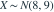

，其中第二参数为方差。记标准正态分布的 分位数为 ，则 的 分位数是哪项？- A
- B
- C
- D
我已思考，展开答案与解析
正确答案：A
- ，因此所求分位数为 。
易错提醒标准化时除以标准差，不是方差。
数学三·概率统计基础专题 · 数学三概率统计基础专题·原创第13题
按数学三常见概率统计知识点原创；不是历年真题或教材原题。

，其中第二参数为方差。记标准正态分布的 分位数为 ，则 的 分位数是哪项？数学三·概率统计基础专题 · 数学三概率统计基础专题·原创第13题
按数学三常见概率统计知识点原创；不是历年真题或教材原题。